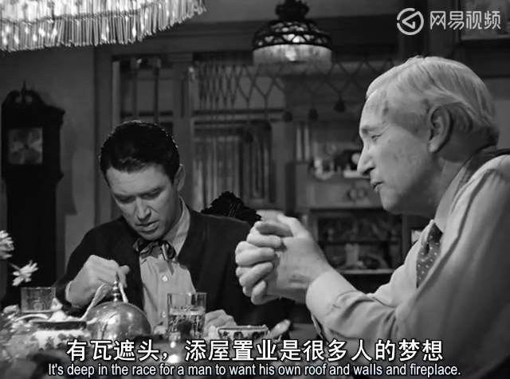
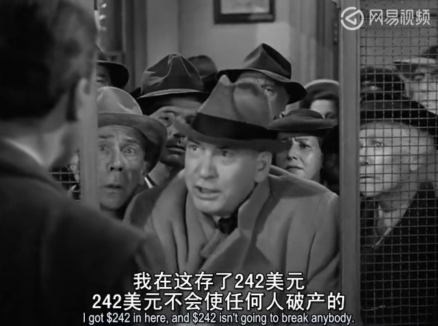
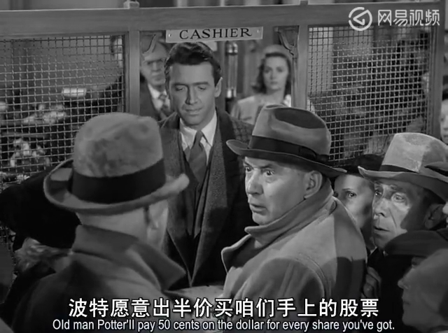

It's a Wonderful Life

基本信息
警告：
以下文字涉及剧情描述，不建议在观影前阅读。
这部上个世纪中期的美国电影，现在来看，也会有很多可圈可点之处。如果让某些财经博主来写，恐怕随便就能写上一两万字。
简介
乔治·贝利（George Bailey）本是一个普通的美国小镇青年。他从小的理想只是当一个百万富翁和游历全世界。但是由于种种原因，四年之后又四年，他一个理想都未曾实现，只因他的身上担负着父辈的理想——“安得广厦千万间，大庇天下寒士俱欢颜”。他幼时从冰窟中救出弟弟，使得自己左耳失聪；他因为没有送出毒药，而使得雇主——药剂师高尔先生免于牢狱之灾；他几经挣扎，放弃了欧洲旅行和去大城市上大学的机会，尽心竭力地维护着父亲的公司和遗留的使命，为小镇添砖加瓦，努力建设资本主义新乡镇，不得不说他的确是个好人。

在同龄人还在上大学期间，GB便跟着父亲在小镇上做工程，顺便积攒旅行费用和大学学费。在体育馆的地板下挖出一个游泳池，帮助当地中学节省了巨大的开支就是他们的杰作之一，校领导感激涕零。这个场馆也顺理成章地成为了毕业舞会的绝佳场所，也间接地催成了GB的姻缘。
而父亲和叔叔合伙开的小公司——贝利兄弟建房贷款合作公司，被当地富豪波特先生视为眼中钉、肉中刺，也是他口中经常念叨的“傻子”。波特先生凭借出色的财技而并非实干，让自己得以在小镇里呼风唤雨。然而，正是这些和钱过不去的傻子们的坚持，才让这个小镇上的穷人们，生活变得越来越好。
危机
父亲留下的公司遭遇过三次重大危机，前两次都被幸运地化解了。在第二次银行挤兑风波时，我们看到了一些不稳定的因素：不明真相的穷人们不顾契约精神蜂拥到建筑公司期望赎回自己的份额，实际上，他们这样做就站到了小镇恶势力的那一边——正义的对立面。GB是哑巴吃黄莲——有苦说不出，只好像孙子一样乞求他们少拿回点。所以大多数的时候，这些不明真相的群众总是被看作乌合之众。殊不知，他们如果不帮GB，实际上就等于害了自己。我们也能在其中见到非常熟悉的精致利己主义的面孔，例如汤姆。这种人往往从始至终只考虑自身的利益，从来不从大局出发考虑问题，一遇到任何风险，首先跑路的就是他们，所以这种人也是最危险的。请大家在日常生活中一定要警惕这类人，并远离他们。


第三次则栽倒在自己人手里，贝利叔叔乐极生悲，亲手将八千美元送到了对手波特先生手里。GB大学可以不去上，婚礼也可以从简，但此时他们是无论如何是变不出八千美元的。这件事情直接使他崩溃。平安夜，生无所恋的他大限将至。但此时影片的进度条才过了一半，剩下的时间就留给天使表演了，他突发奇想虚拟了一个GB不存在的沙盒时空，小镇似乎换了人间，名字也换成了波特镇。那个世界的人们冷漠而不幸，与GB相关的每个人似乎都被生活所累，滕不出多余的热情去温暖他人。当天使克劳伦斯告诉他，因为没有他的存在导致了这样的结局，他的内心再一次地崩塌。正是由于上帝视角的设定和天使角色的插入，让本片，130分钟的片长会让人丝毫没有睡意，只想一口气看完。是否你也有这种感觉呢？
对于GB的终极挑战，影片实质上并未给出一个现实的解决方案，而是借用了宗教手段来干预。主派来天使解决GB的生存意志这个问题，而由大家共同掏钱给老糊涂的贝利叔叔买单。所以实际上，上帝并没有直接解决（可能也无法解决）人间关于金钱的这种世俗而又尖锐的矛盾。那时尚有小镇和温暖人情，可当人们不可避免地进入了城市化内卷的现代生活，又该如何给出解决方案？这就给进入新世纪的美利坚埋下了种种隐患与问题，例如，如何对待波特先生那样的小镇寡头，如何安排小镇贫民们的生活等等。
罗伯特·清崎、沃伦·巴菲特、查理·芒格都与GB有着类似的成长经历，他们从小镇出发，去到远方的大城市，都经历过经济危机的洗礼。不同的是他们终成富豪，而GB还在小镇上过着平凡的生活，陷入生活的泥潭苦苦挣扎。“精算师”波特先生曾给GB算了一笔帐，公司经理，周薪45美元，除去生活中的吃穿用度和孩子的费用能勉强剩余10美元，但生过几个孩子之后，就连10美元都剩不了了，还真是苦逼的中年人呢。
末尾大家重聚一堂，弟弟哈里载誉而归，小镇新贵山姆雪中送碳寄来2万5千美元的支票。影片在一片赞歌声中结束，却巧妙地回避了一个十分重要的问题：这次危机又是化险为夷了，但是下次依然会如此幸运吗？凭空失去的八千美元又从哪来？我们可以预见到，只要波特先生还在世，GB他们的麻烦就会接踵而至，直到有一方先认输。所以如果不解决波特先生这方的问题，这种矛盾与冲突只会不断地重复下去，就像周而复始发生的周期性资本主义经济危机。
探讨：
继续追问下去，又让我们又回到了那个问了千万次的问题，为什么坏人放下屠刀便可立地成佛，好人犯了一丁点错误就陷会入万劫不复？拯救好人光靠祈祷上苍很可能是不够的。
所以，我们的社会究竟是需要更多乔治·贝利那样的“傻瓜”，还是波特先生那样的“聪明人”？
几度风雨
几度春秋
风霜雪雨 搏激流
历经苦难
矢志不改
少年壮志 不言愁